Image matching is an important concept in computer vision and object recognition. Images of the same item can be taken from any angle, with any lighting and scale. But ultimately, they still show the same item and should be categorized that way. Therefore, it is best to use image matching to find similar features in order to categorize the images.
Images taken at different angles or other things occluding the main focus of the image may cause problems detecting features.
Key Point Detection
A general and basic approach to finding features is to first find unique key points, or the most distinctive features, on each image. Then, normalize the content around the key points and compute a local descriptor for it. The local descriptor is a vector of numbers that describes the key point. After doing so, compare and match the local descriptors of the key points on the images.
Harris Detector
The Harris Detector is one of the many existing detectors that can be used to find key points in images. Corners are common key points that the detector tries to look for because there are significant changes in intensity in all directions.
 "Flat": no change in all directions
"Flat": no change in all directions
 "Edge": no change along edge direction
"Edge": no change along edge direction
 "Corner": significant change in all directions
"Corner": significant change in all directions
Steps for Harris Detection are as follows:
1. The change of intensity for the shift [u,v] is:
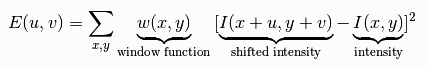2. The window function can be rectangular or gaussian filter, where inside the interval is a constant and outside is zero. This can be approximated by the equation below,
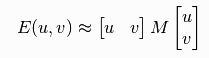
Where M is: 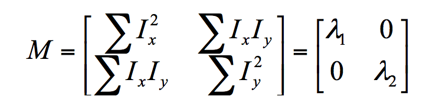
The elements of M correspond to whether the region is an edge, corner, or flat region.
Ix and Iy are image derivatives in x and y directions and the dominant gradient directions should align with the x or y axis.
For example, the image derivatives of this image: 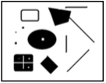
are 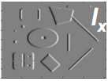 and 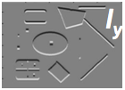
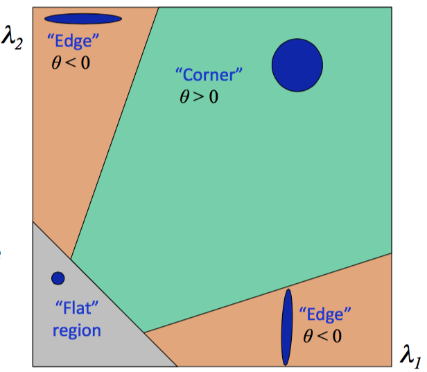
3. The image above shows how the different values of the lambdas result in whether the region is on an edge, a corner, or neither. By using properties of ellipses, if λ1 and λ2 are both small, the region is "flat", in other words, the region is not an edge or a corner. If λ1 is small and λ2 is large, or vice versa, the region is an edge. Lastly, if both λ1 and λ2 are large, the result is a corner, which is the goal of the Harris Detector.
4. The final equation: 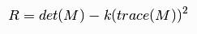 corresponds to the "cornerness" of a location in an image, and the Harris detector uses this to determine key points in the image.
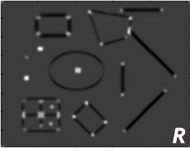
To understand the math concepts more deeply behind the Harris Detector, click here.
SIFT Detector
Scale-Invariant Feature Transform (SIFT) is another technique for detecting local features. The Harris Detector, shown above, is rotation-invariant, which means that the detector can still distinguish the corners even if the image is rotated. However, the Harris Detector cannot perform well if the image is scaled differently.
For example, in the image below, what seemed like a corner in an image, can become an edge when the image is scaled but the detector is in the same window.
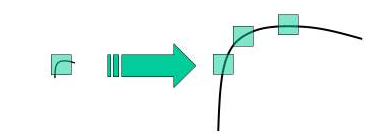The SIFT detector is rotation-invariant and scale-invariant.
When you have two identical images, except one is scaled differently than the other, SIFT maximizes the Difference of Gaussians (DoG) in scale and in space to find same key points independently in each image. DoG is basically the difference of the Gaussian blurring of an image with different standard deviation, σ. Every octave, or scale, of the image is blurred with Gaussians with sigmas of different scaling factors. The differences between adjacent Gaussian-blurred images are calculated as DoG. The process is repeated for each octave of scaled image.
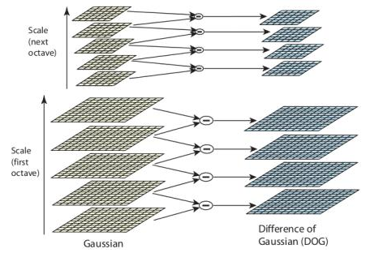When the DoG is found, the SIFT detector searches the DoG over scale and space for local extremas, which can be potential keypoints. For example, one pixel (marked with X) in an image is compared with its 26 neighbors (marked with circles) at the current and adjacent scales. If the pixel is greater or smaller than all its neighbors, then it is a local extrema and is a potential keypoint in that scale.
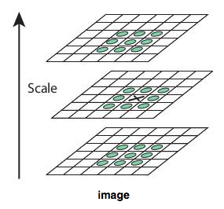Once the keypoint is found, the next step is to construct a descriptor that contains information of image characteristics around the keypoint yet is not sensitive to rotation and image illumination.
The steps of building the SIFT descriptor are as following:
1. Use the Gaussian blurred image associated with the key point’s scale
2. Take image gradients over a 16x16 array
3. Rotate the gradient directions AND locations relative to the keypoint orientation
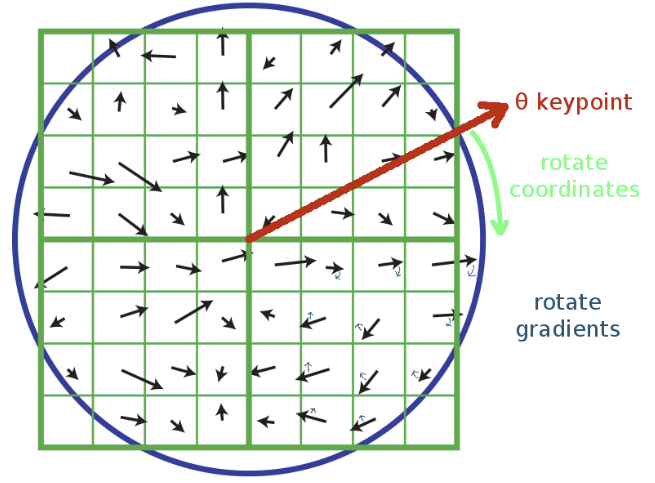4. Create an array of orientation histograms (a 4x4 array is shown)
5. Add the rotated gradients into their local orientation histograms with 8 orientation bins

6. The resulting SIFT descriptor is a length 128 vector representing a 4x4 histogram array with 8 orientation bins per histogram
The SIFT descriptor is invariant to rotation (because we rotated the gradients) and scale (because we worked with the scaled image from DoG). Robustness to illumination changes can be improved by normalizing and clamping the vector. The SIFT vectors can be used to compare key points from image A to key points from image B to find matching keypoints by using Euclidean "distance" between descriptor vectors.
Image Retrieval
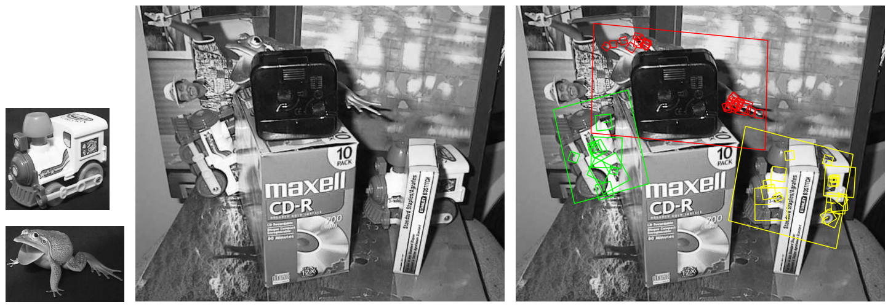
In this example of image retrieval, the training images for two objects are shown on the left. They can be recognized in a cluttered image with extensive occlusion as shown in the middle. The recognition results are shown on the right. The large parallelograms represent the recognized objects with boundaries showing the original training images under the detected affine transformation. Small squares indicate the key points that were matched with the training images.
To read more about SIFT detector, click here.
Image Stitching
The goal of panoramic stitching is to stitch multiple images into one panorama by matching the key points found using Harris Detector, SIFT, or other algorithms.
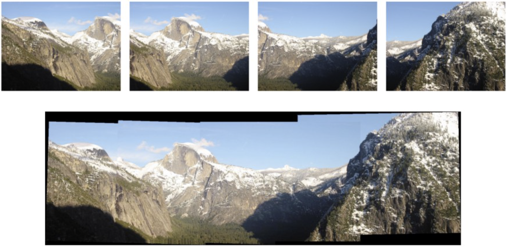The steps of panoramic stitching are as follows:
1. Detect keypoints - Calculate Difference of Gaussians to use SIFT detectors to find keypoints
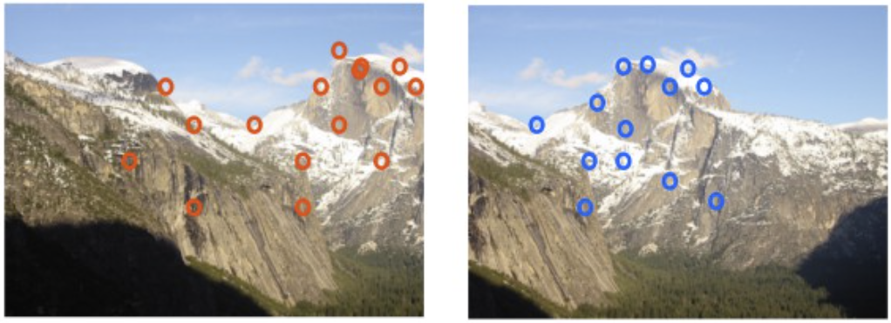2. Build the SIFT descriptors - Calculate the 128-dimensional SIFT vector for each keypoint
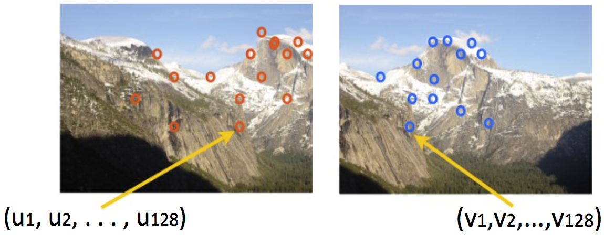3. Match SIFT descriptors - Find Euclidean distance between descriptors
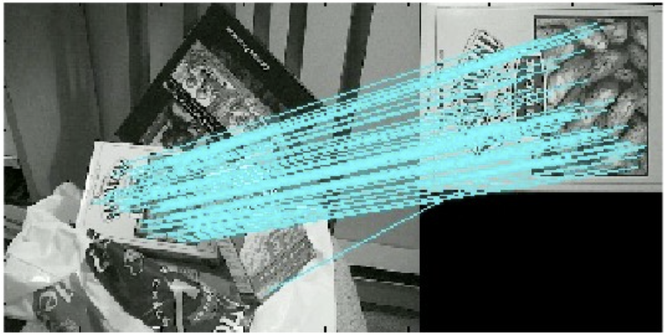4. Fit the transformation - Find the transformation matrix H that best fit the relative relationships between matched descriptors
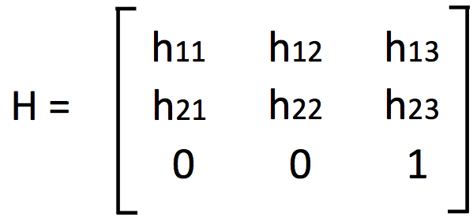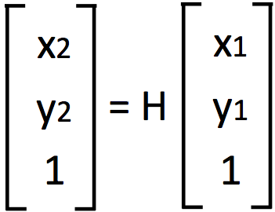5. Stitch the images - Use the transformation matrix H to stitch together multiple images to create ones like the example below
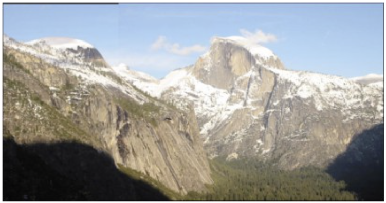